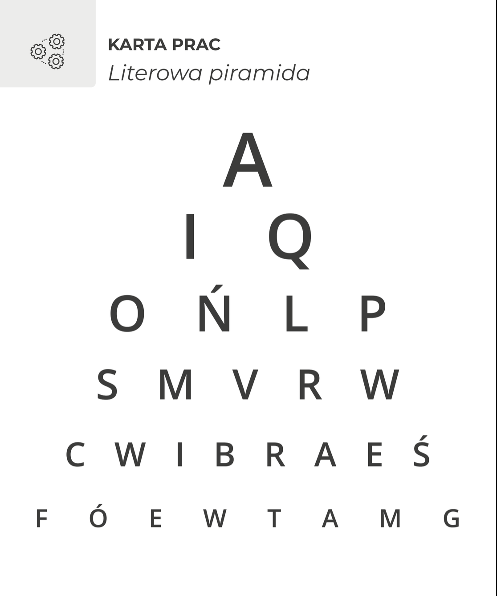
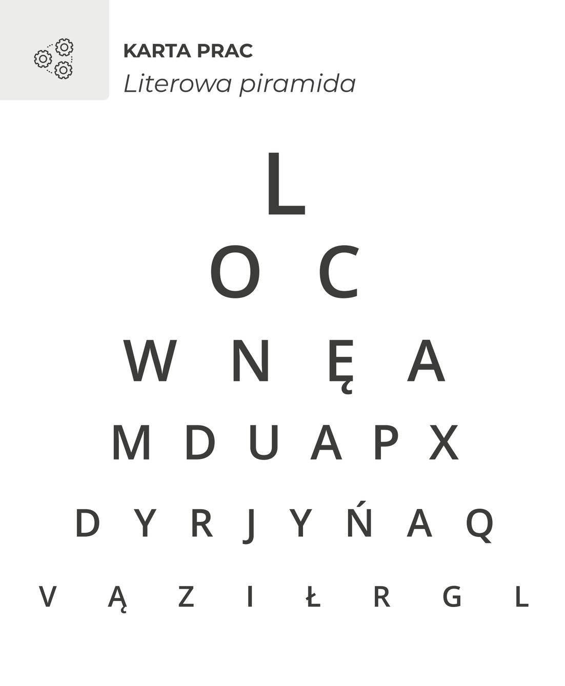

Literowa piramida – czy zespół rzeczywiście osiąga więcej niż jednostka?
To ćwiczenie ma bardzo prostą mechanikę, ale prowadzi do ciekawej rozmowy o współpracy, strategii i wykorzystywaniu potencjału zespołu.
Uczestnicy wykonują dokładnie to samo zadanie trzy razy – ale za każdym razem pracują inaczej.
Jak przeprowadzić ćwiczenie?
Przygotuj planszę z literami ułożonymi w piramidę.


Karta prac „Literowa piramida” z materiału 4change – plansza do pierwszego pokazu i do kolejnej rundy ćwiczenia
Samodzielnie
Pokaż planszę przez 10 sekund.
Uczestnicy nie mogą robić notatek. Po jej zniknięciu każdy indywidualnie zapisuje jak najwięcej zapamiętanych liter.
Korzystamy z wiedzy grupy
Uczestnicy pracują w małych grupach i przez kilka minut porównują to, co zapamiętali.
Następnie uzupełniają swoje odpowiedzi.
Najpierw strategia, potem działanie
Tym razem zespoły wiedzą, co za chwilę się wydarzy.
Dostają dwie minuty na stworzenie wspólnej strategii.
{{ s }}
Ponownie pokazujesz planszę przez 10 sekund.
I porównujecie wyniki.
Taki właśnie trzyetapowy przebieg – praca indywidualna, wymiana wiedzy i świadomie zaplanowana strategia zespołu – przewiduje pierwotne ćwiczenie.
I teraz najważniejsze: omówienie
Nie chodzi przecież o zapamiętywanie liter.
Zapytaj:
{{ q }}
Materiał proponuje również rozmowę o różnicy między pracą indywidualną, grupową i zespołową oraz o tym, co sprawia, że zespół jest dobry.
Efekt
Ćwiczenie pozwala uczestnikom doświadczyć, a nie tylko usłyszeć, że dobra współpraca wymaga strategii, podziału odpowiedzialności i wykorzystania różnych zasobów zespołu.
{{ f.value }}
Mamy więcej ćwiczeń i gier, które pokazują zespołowi, jak naprawdę współpracuje.